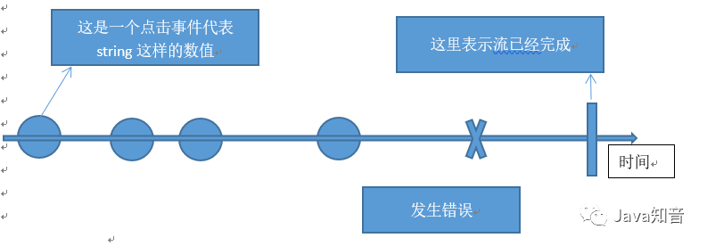
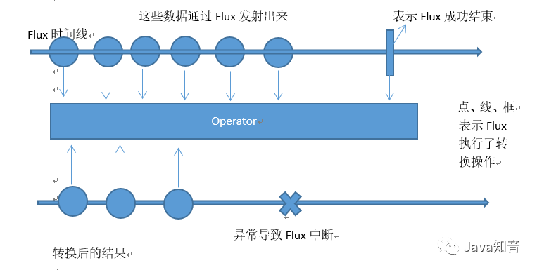
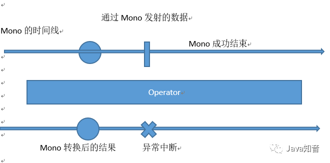

接上一篇：
如果想在代码中集成 Reactor框架，则需要添加如下的 Maven依赖，分别引入 Reactor的核心功能以及用于支持测试的相关工具类。
<dependency>
<groupid>io.projectreactor</groupid>
<cartifactid>reactor-cores/artifactid>
</dependency>
<dependency>
<groupid>io.projectreactor</groupid>
<cartifactid>reactor-tests/artifactid>
<scope>test</scope>
</dependency>
Reactor框架在实现响应式流规范的基础上有其特定的设计思想。本节先介绍 Reactor框架的异步数据序列，然后介绍Flux和Mono这两个核心组件。
当使用 Reactor开发响应式应用程序时，无论采用何种操作符，都将得到一个如图所示的异步数据序列。

onNext x 0..N [onError |onComplete]
以上公式包含三种不同类型方法的调用，分别处理不同场景下的消息通知。
onNext():正常的包含元素的消息通知。
onCompleted():序列结束的消息通知，可以没有。
onError():序列出错的消息通知，可以没有。
按照响应式流规范，当这些消息通知产生时，异步序列的订阅者中对应的这三个方法将被调用。如果序列没有出错，则 onerror()方法不会被调用;如果不调用 onComplete()方法，就会得到一个无限异步序列。通常，无限异步序列应该只用于测试等特殊场景。
Flux代表0至N个元素的异步序列，如下图，序列的三种消息通知都是用于Flux.

以下代码示例展示了在具体项目中使用Fux组件的方法。如果我们了解微服务架构中基于 Hystrix I的服务回退( Fallback)机制，就应该知道代码中的 getordersfallbacko是一个典型的回退函数，我们通过FIux.fromlterableo方法构建了 Flux＜Order＞对象，作为回退函数的返回值。
关于服务回退机制，将在之后章节中具体介绍
private Flux<order> getordersfallback(){
List<order> fallbacklist = new Arraylist<>();
Order order= new Order();
order.setid("orderinvalidid");
order.setaccountid("Invalidid");
order.setitem("Order list is not available");
order.setcreatetime (new Date();
fallbacklist.add (order);
return Flux.fromiterable (fallbacklist);
}
下面的示例更加容易理解一点，从位于方法名上的＠ Getmapping注解可以看出，这是个 Controller中的端点，用于返回一个 Order对象列表。这里返回的 Order列表同样通过Flux＜ Order＞对象进行呈现。
@getmapping("/vl/orders")
public Flux<Order> getorderlist(){
Flux<order> orders= orderservice. getorders();
return orders;
}
在 Reactor中，Mono表示包含0个或1个元素的异步序列，如图所示，该序列中同样可以包含与Fux相同的三种类型的消息通知。
请注意，Mono也可以用来表示一个空的异步序列，该序列没有任何元素，仅仅包含序列结束的概念(类似于Java中的 Runnable)。我们可以用Mono＜void＞代表一个空的异步序列。

与FIux组件一样，通过服务回退来演示Mono组件的用法，示例代码如下。
private Mono<order> getorderfallback(){
Order order = new Order();
order.setid("orderinvalidid");
order.setaccountid("Invalidid");
order.setitem("Order list is not available");
order.setcreatetime(new Date());
return Mono.just(order);
}
这里首构建一个 Order对象，然后通过 Mono.just()方法返回一个Mono对象。
Controller层组件也是一样的，通过d获取Mono＜Order＞对象的端点示例如下。
@tapping("/vl/orders/{id}")
public Mono<order> getorder(@Pathvariable String id){
Mono<order> order orderservice.getorderbyid(id);
return order;
}
相较Mono，Flux是更通用的一种响应式组件，所以针对FIux的操作要比Mono更丰富。另一方面，FIux和Mono之间可以相互转换。例如，把两个Mono序列合并起来就得到一个Flux序列，而对一个FIux序列进行计数操作，得到的就是Mono对象。